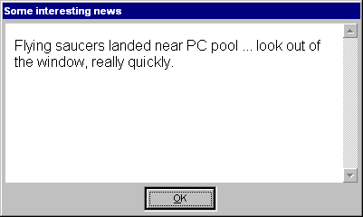
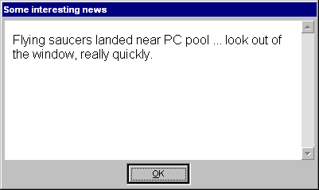
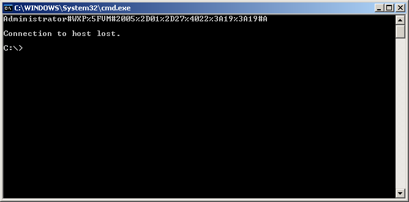
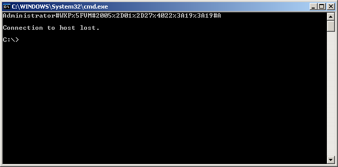
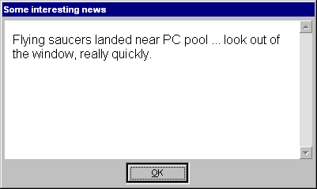
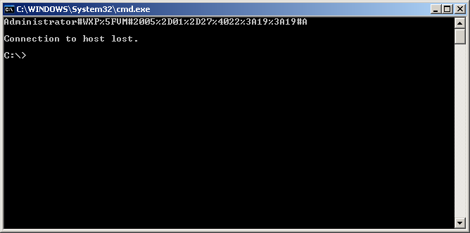

http://assarbad.net
or drop me a mail:
oliver@assarbad.net


 

 

This replacement GINA is
© 2003-2005 by Assarbad
This GINA has the following features:
The agreement dialog is what actually started the whole project. I've had several trials with programs that showed an agreement when the user was already logged on and so on, but given the cleverness (or is it stupidity?) of some users with circumventing these measures I had to come up with different solutions even smarter than those users.
This is when I started to think about replacing the GINA and hence preventing logon
if the user disagreed. The first version of it was written in Delphi (version 4) and
was in use for quite a while and has proven stable. As a side-note: I am co-admin (earlier
admin) in a PC pool of my university.
The version written in Delphi was partially overcomplicated, but already featured a
maintenance mode, a news message and of course the agreement dialog. But it had some
technical deficiencies compared to this current version.
The current version, written in Microsoft Visual C++ (with use of MFC), is much
better from the technical view, but has a bigger size as well. Added were the
feature to allow only a given guest account to log on (besides the admin of course).
Furthermore all messages can now be shown as HTML, may it be from an external or local
URI/URL or may it be directly from content saved in the settings of AgreementGINA2.
Last but not least there is to mention the configuration dialog which allows the admin
to configure all aspects of this GINA locally. For the future I plan to support configuration
of multiple computers from a central location (e.g. the domain server). For now the
admin will have to stick to the local configuration capabilities or use the well-defined
set of registry settings which resemble the graphical configuration dialog.
Visit my website:
http://assarbad.net
or drop me a mail:
oliver@assarbad.net

